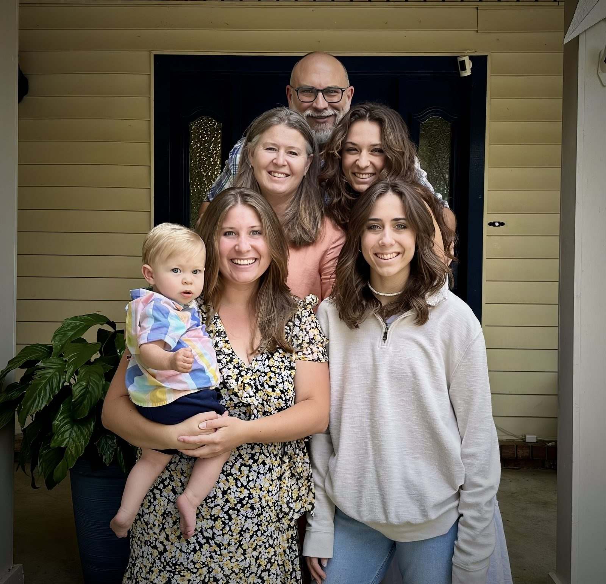
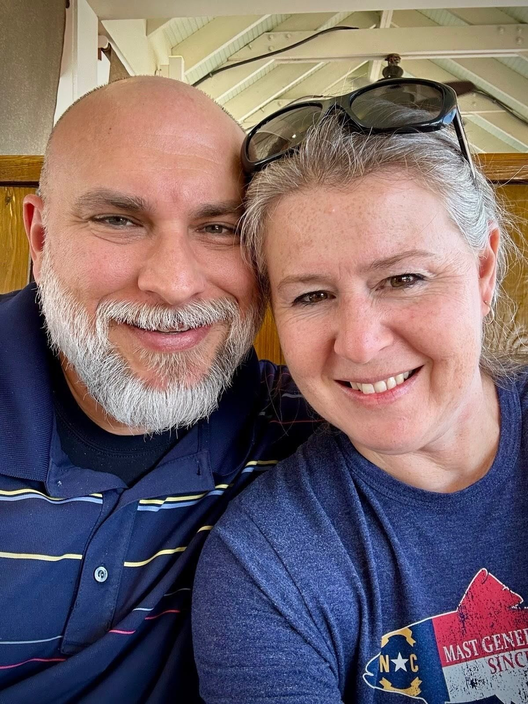
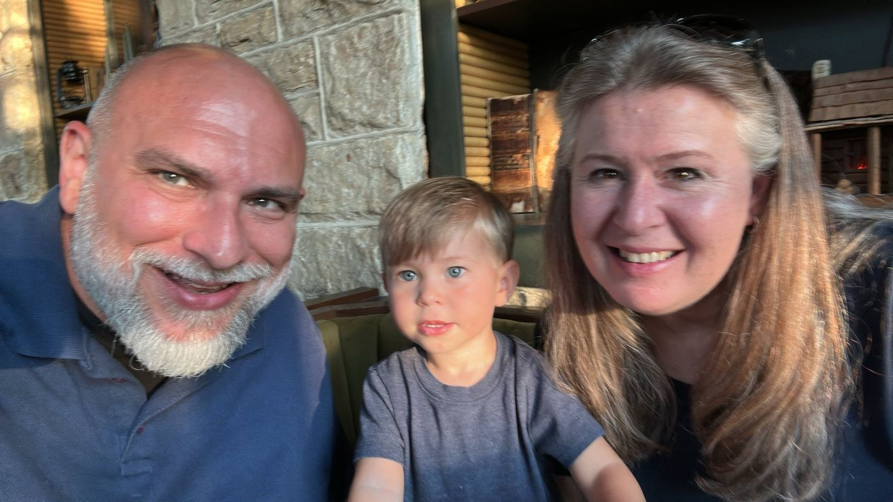
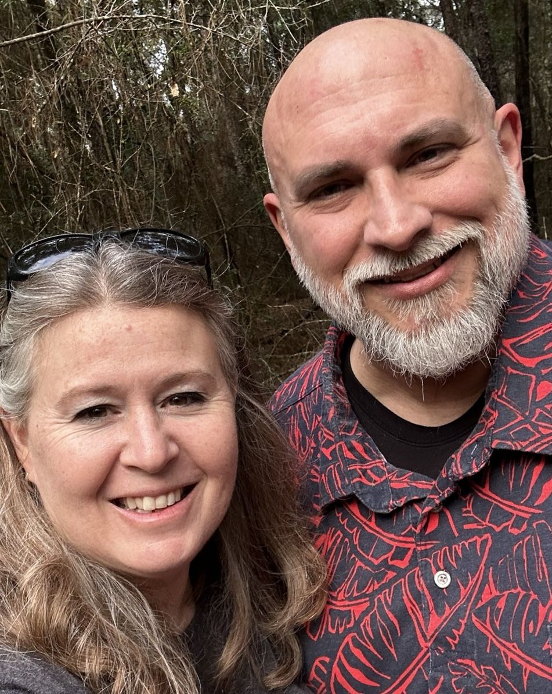
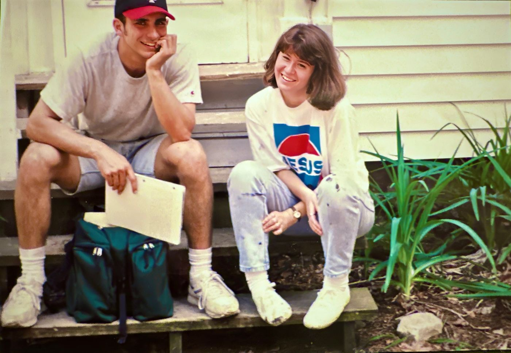

Nate Long and family are being sent under Inhabit to plant a church in Volcán, Panama—in the Chiriquí highlands known as the Tierras Altas. Departure is planned for January 2027.




The work is ecclesial before it is entrepreneurial. A church plant, in this sense, is not a brand launch or a transfer of Sunday preferences from one country to another. It is the slow formation of a people who gather around Word and Table, who learn to belong to one another, and who keep an open door for the stranger without dissolving the pattern that makes the door worth entering.
Inhabit is the public face of that sending. Behind it stands a longer vision—the Mansio Society for Gospel Living—concerned with settlements ordered by an Ordo vitae: a disciplined pattern of life that corresponds to the gospel rather than merely decorating it. Volcán is where that vision first takes address, climate, and neighbors.

What we mean by plant
We mean a congregation that can be inhabited: catechesis that forms adults and children; worship that is recognizable as Christian rather than merely contemporary; hospitality practiced as ordinary evangelism; and economic life that does not pretend the gospel has nothing to say about work, money, and place.
We do not mean a franchise. The Tierras Altas already have their own languages, histories, and congregations. Faithfulness will look like learning before teaching, and like patience before scale.
What is asked of friends
Some will read and leave it at that. Some will pray. Some will underwrite the practical load of sending, settling, and sustaining a household and a fledgling church. Those categories are listed plainly on the partnership page—without invented budgets or urgency theater.